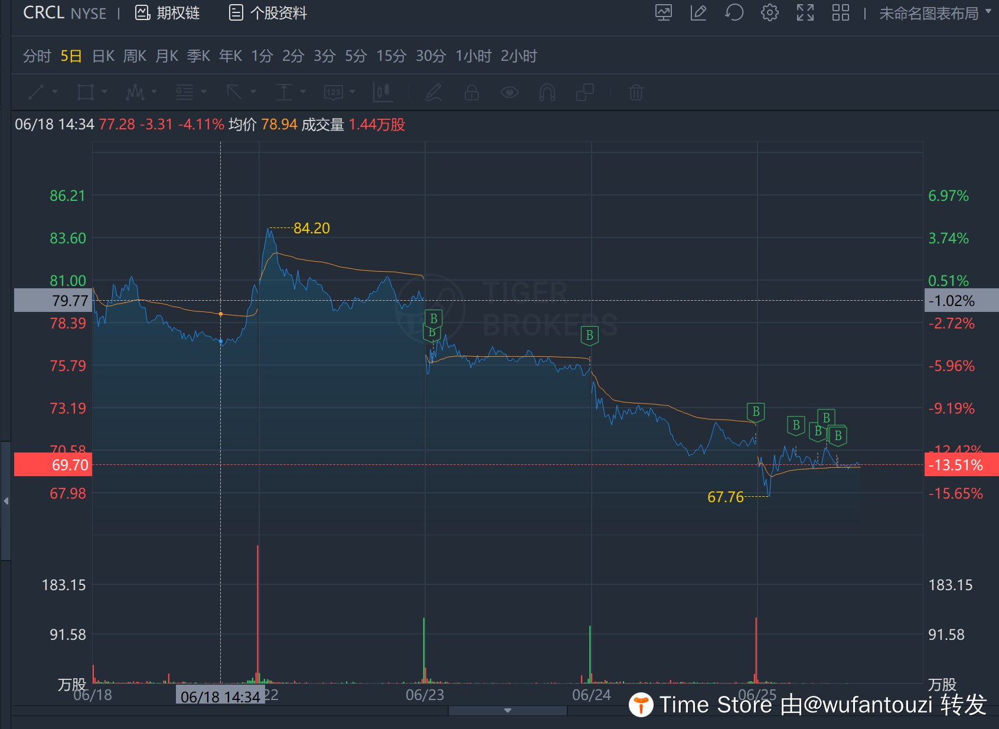

今日crcl最低跌到了67u/股
市值跌破了170亿美金
btc跌到了最低58000
usdc的发行量目前跌到了738亿u
与峰值相比btc跌了53%
usdc的发行量与峰值相比只跌了10%
但即使如此
crcl还是跟随btc的趋势一起大跌
一个月前crcl140u如今跌了50%到70u不足
有人说是因为usdc增发不及预期
其实对比btc的跌幅由于beta是-50%
usdc是-10% 实际crcl的成长速度是满足40%的
而且这还只是半年数据
短期内并不指望btc能大涨
带动usdc发行量增发了
但不管是币安上美股还是hype交易量增长
其实都在拉动usdc增发
各种RWA
以及越南等稳定币支付也在加速稳定币渗透
币圈如果还有牛市
稳定币会很快继续保持增发
币圈如果没有牛市
稳定币可能慢一点但是稳稳增长也是可预期的
ARC这里的收入和增长还没有计入crcl的财报
AI货币支付方面也有进展
5 月 7 日亚马逊云联合 Coinbase、Stripe
推出 Bedrock AgentCore Payments 预览版
底层完全依托 USDC 协议
支持 AI 智能体自主支付算力
无需人工授权设置单笔预算交易时效风控围栏
6 月 1 日官方发布完整技术白皮书服务开放
美欧亚四大区域云节点 AI 智能体不触碰私钥
由 Coinbase 托管钱包完成 USDC 毫秒级结算
6 月 15 日行业数据显示
接入该体系的 AI 机器交易 70%
使用 USDC 完成结算
所以crcl还是一只AI概念股
随着btc可能继续新低
crcl短线依然有下跌可能
但这主要是情绪而不是crcl的价值面真的变了
我每天使用ai也在每天使用稳定币
如果稳定币未来是万亿美金以上发行量
crcl的未来没有理由不是万亿美金的企业
守着一堆美元拿国债稳定收益
妥妥的钱矿
可能还是会被骂
但会保持继续买入
坚定持有
耐心等待
